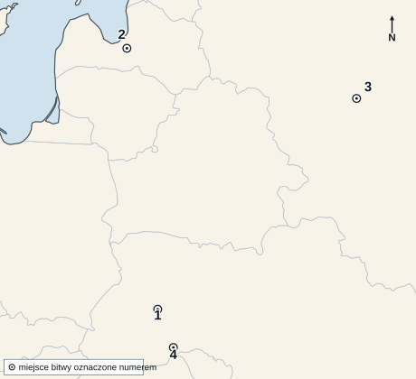
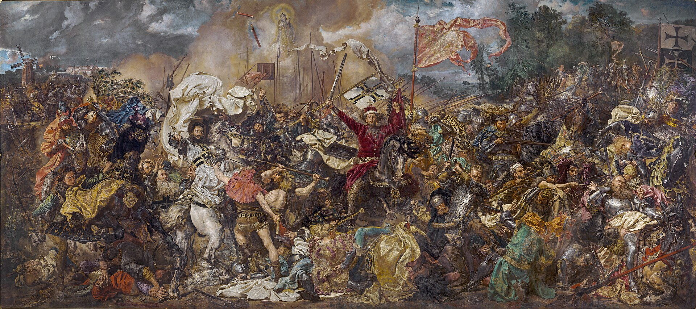

KOD UCZNIA:
Materiał autorski do ćwiczeń, opracowany na podstawie regulaminu szczegółowego, archiwalnych arkuszy etapu szkolnego Kujawsko-Pomorskiego Kuratora Oświaty (2018/2019–2025/2026) oraz — w części zadań (zob. klucz) — arkuszy Konkursu Historycznego Kuratorium Oświaty w Warszawie dla województwa mazowieckiego (2019/2020–2025/2026). Nie jest oficjalnym arkuszem konkursowym żadnego z kuratoriów.
Uzupełnij tekst. W każdą lukę wpisz właściwe określenie.
Ateny i Sparta, dwie największe polis starożytnej Grecji, wykształciły odmienne ustroje. W Atenach po reformach Klejstenesa z (1) r. p.n.e. władzę sprawowało zgromadzenie ludowe zwane (2), w którym głos mógł zabierać każdy pełnoprawny obywatel. W Sparcie władzę dzielili dwaj dziedziczni (3), rada starszych oraz urzędnicy zwani (4), sprawujący nadzór nad całym życiem państwa. Chłopcy spartańscy od siódmego roku życia przechodzili surowe wychowanie wojskowe zwane (5). Podstawą gospodarki Sparty była praca podbitej ludności miejscowej, przypisanej do uprawianej ziemi i zwanej (6).
Do każdego opisu dopasuj nazwę zakonu. Wpisz litery A–G. Cztery odpowiedzi są zbędne.
| 1. „W oparciu o regułę św. Augustyna zakon składał się przede wszystkim z ludzi, którzy nie mieli święceń kapłańskich [...]. Charakterystycznym symbolem był czerwony krzyż [na] białym płaszczu, na lewym ramieniu.” | |
| 2. „Zakon założony w VI w. we Włoszech. Reguła nakazuje harmonijne łączenie wspólnej modlitwy z pracą fizyczną i umysłową. [...] W prowadzonych szkołach, bibliotekach i skryptoriach klasztornych ocalili wiele z dorobku starożytności.” | |
| 3. „Założony w 1206 r. zakon powstał w celu przeciwdziałania ruchowi katarów i odegrał główną rolę w rozwoju inkwizycji. [...] Zakon wydał wielu wybitnych filozofów i teologów (m.in. Tomasz z Akwinu).” |
Fragmenty na podstawie: Konkurs Historyczny dla klas IV–VIII szkół podstawowych województwa mazowieckiego, etap szkolny 2020/2021, zadanie 7.
4. Wskaż literę opcji oznaczającej zakon rycerski założony przez krzyżowców w Ziemi Świętej w XII w., zajmujący się przede wszystkim opieką nad pielgrzymami i szpitalnictwem (stąd jego nazwa).
5. Podaj łacińską zasadę, którą podsumowuje się benedyktyński ideał łączenia modlitwy z pracą.
Oceń prawdziwość zdań. Wpisz P (prawda) albo F (fałsz).
| 1. Cesarstwo Rzymskie podzielono ostatecznie na część wschodnią i zachodnią w 395 r., za panowania Teodozjusza I. | |
| 2. Cesarstwo Zachodniorzymskie przetrwało dłużej niż Cesarstwo Wschodniorzymskie. | |
| 3. Ostatniego cesarza zachodniorzymskiego, Romulusa Augustulusa, obalił germański wódz Odoaker w 476 r. | |
| 4. Stolicą Cesarstwa Wschodniorzymskiego był Rzym. | |
| 5. Upadek Cesarstwa Zachodniorzymskiego uznaje się umownie za cezurę między starożytnością a średniowieczem. | |
| 6. Język łaciński pozostał głównym językiem urzędowym Cesarstwa Wschodniorzymskiego aż do jego upadku w 1453 r. |
Do każdej cechy dopisz, czy dotyczy ona Kościoła katolickiego (K), czy prawosławnego (P) — jednego z dwóch wyznań ukształtowanych po rozłamie 1054 r.
| 1. Uznaje zwierzchnictwo papieża jako głowy całego Kościoła. | |
| 2. Dopuszcza żonatych mężczyzn do święceń kapłańskich niższego stopnia. | |
| 3. W wyznaniu wiary zawiera dodatek „Filioque”, o pochodzeniu Ducha Świętego także od Syna. | |
| 4. Językiem liturgii pozostawał przez wieki głównie grecki oraz języki narodowe (np. cerkiewnosłowiański). | |
| 5. Najwyższą władzę duchową sprawuje kolegium równych sobie patriarchów, bez jednego zwierzchnika całego Kościoła. | |
| 6. Do Eucharystii używa chleba przaśnego (niekwaszonego). |
Uporządkuj wydarzenia chronologicznie. Wpisz cyfry od 1 (najwcześniejsze) do 5 (najpóźniejsze).
| A. Upadek Akki, ostatniej twierdzy krzyżowców w Ziemi Świętej. | |
| B. Wezwanie papieża Urbana II do wyprawy na soborze w Clermont. | |
| C. Zdobycie Konstantynopola przez krzyżowców podczas IV krucjaty. | |
| D. Nieudana II krucjata pod wodzą królów Francji i Niemiec. | |
| E. Zdobycie Jerozolimy przez krzyżowców podczas I krucjaty. |
„Na trzydziesty drugi dzień po wyjeździe z Kadyksu przybyłem na morze Indyjskie i odkryłem tam bardzo liczne i gęsto zaludnione wyspy, które bez czyjegokolwiek protestu objąłem w posiadanie naszego najmiłościwszego króla przez uroczystą proklamację i zawieszenie flagi hiszpańskiej. Pierwszą z tych wysp nazwałem San Salwador z wdzięczności dla Zbawiciela.”
Na podstawie: Teksty źródłowe do nauki historii w szkole, nr 14: Odrodzenie, Warszawa 1960, s. 5; cyt. za: Konkurs Historyczny woj. mazowieckiego, etap szkolny 2021/2022, zadanie 22.
Uzupełnij tekst. W każdą lukę wpisz właściwe określenie.
Autorem cytowanego listu był (1). Opisana w liście wyprawa wyruszyła z portu (2) w Hiszpanii. Odkryte wyspy leżą na półkuli (3). Wyprawa miała miejsce w (4) (podaj wiek i jego połowę). Rokiem wyprawy był (5).
W zadaniach 1–5 zaznacz albo wpisz literę jednej poprawnej odpowiedzi.
| 1. Vasco da Gama był żeglarzem pochodzącym z: A. Hiszpanii B. Portugalii C. Włoch D. Anglii |
|
| 2. Wyprawa Vasco da Gamy z lat 1497–1498 jako pierwsza opłynęła przylądek zwany: A. Dobrej Nadziei B. Igielnym C. Horn D. Zielonym | |
| 3. Celem i zarazem miejscem docelowym wyprawy było indyjskie miasto portowe: A. Goa B. Bombaj C. Madras D. Kalikat | |
| 4. Sukces wyprawy Vasco da Gamy oznaczał dla Portugalii przede wszystkim: A. odkrycie Ameryki B. podbój Chin C. otwarcie morskiej drogi do Indii, z pominięciem szlaków lądowych D. założenie kolonii w Ameryce Północnej | |
| 5. Sponsorem wyprawy Vasco da Gamy był król Portugalii: A. Manuel I B. Henryk Żeglarz C. Jan II D. Sebastian |
Dopasuj hasło do opisu. Wpisz litery A–F.
| 1. Wszechstronny twórca, autor „Mony Lisy” i „Ostatniej Wieczerzy”, zajmujący się też anatomią i inżynierią. | |
| 2. Autor fresków plafonu Kaplicy Sykstyńskiej oraz rzeźby „Dawida”. | |
| 3. Malarz nadworny papieży, autor fresku „Szkoła Ateńska” w Watykanie. | |
| 4. Władca Florencji z rodu bankierów, hojny mecenas artystów i uczonych w drugiej połowie XV w. | |
| 5. Papież, który zlecił budowę nowej bazyliki św. Piotra i sprowadził do Rzymu najwybitniejszych artystów epoki. | |
| 6. Autor obrazu „Narodziny Wenus”, tworzący na dworze florenckich Medyceuszy. |
Uzupełnij tekst. W każdą lukę wpisz właściwe określenie.
Wojna trzydziestoletnia rozpoczęła się w (1) r. wydarzeniem znanym jako defenestracja praska. Konflikt, pierwotnie religijny spór między katolikami a (2), z czasem przekształcił się w wojnę o dominację w Europie — po stronie protestanckiej interweniowała nawet katolicka Francja, a wcześniej wojska skandynawskiego królestwa (3) pod wodzą Gustawa II Adolfa. Wojna szczególnie spustoszyła ziemie (4), tracące nawet jedną trzecią ludności. Zakończył ją w 1648 r. pokój zawarty w (5), uznający m.in. niepodległość Holandii i Szwajcarii.
„Potykał się za sprawiedliwość, przed gniewem króla nie ustąpił: i staje żołnierz Chrystusowy za krzywdę ludu sam do walki. Ponieważ stale wypominał on okrucieństwo tyranowi, koronę zdobył męczennika, padł posiekany na kawałki.”
Fragment pieśni na podstawie: Konkurs Historyczny woj. mazowieckiego, etap szkolny 2019/2020, zadanie 8.
Wykonaj polecenia 1–4.
1. Cytowany tekst stanowi świadectwo kultu świętego biskupa .
2. Wspomnianym w tekście „tyranem” miał być król Bolesław (podaj przydomek).
3. Autor tekstu wyraża przekonanie, że śmierć świętego nastąpiła wskutek .
4. Podaj przybliżony rok tego wydarzenia.
Uporządkuj wydarzenia chronologicznie. Wpisz cyfry od 1 (najwcześniejsze) do 5 (najpóźniejsze).
| A. Stłumienie przez Władysława Łokietka buntu wójta Alberta w Krakowie. | |
| B. Zezwolenie Henryka Brodatego na pierwszą na ziemiach polskich lokację na prawie magdeburskim. | |
| C. Śmierć Henryka Pobożnego w bitwie z Mongołami pod Legnicą. | |
| D. Sprowadzenie Krzyżaków do ziemi chełmińskiej przez Konrada Mazowieckiego. | |
| E. Koronacja Przemysła II na króla Polski w Gnieźnie. |
Na mapie oznaczono cztery pola bitew. Do każdego opisu dopisz właściwy numer 1–4.

Mapa bazowa: Natural Earth 1:50 mln, domena publiczna (CC0), Wikimedia Commons; oznaczenia i opracowanie zadania: własne. Cienkie jasne linie to współczesne granice państwowe, naniesione wyłącznie dla ułatwienia orientacji.
| A. Bitwa, w której husaria pod wodzą hetmana Stanisława Żółkiewskiego pokonała połączone wojska moskiewskie i szwedzkie. | |
| B. Zwycięska obrona obozu polsko-litewsko-kozackiego przed liczniejszą armią turecką nad Dniestrem. | |
| C. Bitwa w Inflantach, w której niewielkie siły hetmana Jana Karola Chodkiewicza rozgromiły liczniejszą armię szwedzką. | |
| D. Kilkutygodniowe oblężenie warownego obozu wojsk Rzeczypospolitej przez oddziały Bohdana Chmielnickiego i Tatarów krymskich. |
E. Podaj rok bitwy opisanej w wierszu A. F. Podaj rok bitwy opisanej w wierszu B.
Do każdego opisu podaj imię i przydomek (lub numer) opisanego władcy.
| 1. Odzyskał z rąk krzyżackich ziemię dobrzyńską, zapewnił szlachcie nietykalność osobistą i majątkową, odnowił podupadającą Akademię Krakowską. | |
| 2. Przyznał sejmikom ziemskim decydującą rolę w kwestii zwoływania pospolitego ruszenia i uchwalania nowych podatków, przywrócił Polsce po 158 latach dostęp do Bałtyku. | |
| 3. Zaakceptował przekształcenie Rady Królewskiej w Senat i ogólnopolskiego zjazdu szlachty w izbę poselską sejmu, ograniczył prawa chłopów, wprowadzając zasadę, że w ciągu roku tylko jeden chłop może opuścić wieś. | |
| 4. Zobowiązał się, że nie podejmie żadnych nowych decyzji w sprawach państwa bez zgody izby poselskiej i senatu, zatwierdził tzw. Statut Łaskiego. | |
| 5. Po śmierci ostatnich Piastów mazowieckich wcielił do Polski Mazowsze, zaakceptował przekształcenie państwa zakonnego w świeckie księstwo i przyjął hołd od pierwszego luterańskiego księcia Prus. | |
| 6. Wprowadził do sejmu polskiego posłów i senatorów litewskich, zaczął wybijać jednakową monetę dla Korony i Litwy, stworzył pierwszą w historii Polski flotę wojenną. |
Opisy na podstawie: Encyklopedia szkolna. Historia, Warszawa 2004; cyt. za: Konkurs Historyczny woj. mazowieckiego, etap szkolny 2022/2023, zadanie 17.
Do każdego tekstu dopasuj nazwę dokumentu, z którego pochodzi. Wpisz litery A–D. Jedna odpowiedź jest zbędna.
| 1. „Aby były solidne układy między Koroną Polską a Królestwem Francuskim [...]. Aby król francuski wszystkie długi królewskie i Rzeczpospolitej popłacił [...]. Aby tu cudzoziemców żadnych król nie trzymał.” | |
| 2. „Iż za żywota naszego my i potomkowie nasi królowie polscy nie mamy mianować ani obierać [...] żadnym sposobem [...] króla, na państwo sukcesora naszego sadzać, a to dlatego, aby zawdy wiecznymi czasy [...] wolne obieranie zostawało wszem stanom koronnym.” | |
| 3. „Ponieważ w Rzeczpospolitej naszej jest różnorodność w sprawie wiary chrześcijańskiej [...] obiecujemy to sobie wspólnie [...] iż którzy jesteśmy różniący się w religii chrześcijańskiej, pokój między sobą zachować, a dla różnej wiary [...] krwi nie przelewać.” |
Fragmenty na podstawie: Konkurs Historyczny woj. mazowieckiego, etap szkolny 2022/2023, zadanie 23.
4. Który z czterech wymienionych dokumentów (A–D), inaczej niż pozostałe, obowiązywał w niezmienionej formie każdego kolejnego elekta, zamiast być ustalanym od nowa przy każdej elekcji? Podaj literę i nazwę.
„My, komes Jan razem z bratem naszym Wojciechem [...] dziedzictwo nasze, Radlino, Marcinowi ze Staniewa i jego dziedzicom oddaliśmy w celu lokacji na prawie niemieckim [...]. Ażeby ci uprawiający przerzeczoną wioskę mogli wypłacić wszystko, otrzymają 9 lat wolnych od wszelkich danin i opłat.”
Fragment na podstawie: Konkurs Historyczny woj. mazowieckiego, etap szkolny 2023/2024, zadanie 15.
Wykonaj polecenia 1–4.
1. Powyższy tekst stanowi fragment dokumentu zwanego .
2. Wieś, o której mowa w tekście, znajdowała się w majątku (podaj, do jakiego stanu należał właściciel).
3. Przez dziewięć lat mieszkańcy wsi byli zwolnieni z (podaj rodzaj świadczenia na rzecz pana).
4. Podaj wiek (lub dwa sąsiednie wieki), w którym najczęściej lokowano na ziemiach polskich wsie na prawie niemieckim.
Uzupełnij tekst. W każdą lukę wpisz właściwe określenie.
Kazimierz Wielki, ostatni król Polski z dynastii Piastów, przeszedł do historii dzięki gruntownym reformom państwa. W latach 1346–1347 zebrał i spisał prawo zwyczajowe w tzw. statutach (1) (nazwa dwóch miast, w których je ogłoszono). Aby wzmocnić obronność kraju, otoczył murami i wzniósł od podstaw kilkadziesiąt zamków, dzięki czemu przypisuje mu się powiedzenie, że »zastał Polskę (2), a zostawił (3)«. Roztaczał opiekę nad chłopami, za co bywał nazywany „królem (4)”. W 1334 r. potwierdził i rozszerzył na całą Polskę wcześniejszy statut kaliski, gwarantujący przywileje ludności (5), uciekającej wówczas przed prześladowaniami z zachodniej Europy. W 1364 r. założył w Krakowie uczelnię, znaną dziś jako (6).
Obejrzyj reprodukcję obrazu i wykonaj polecenia.

Jan Matejko, „Bitwa pod Grunwaldem”, 1878, Muzeum Narodowe w Warszawie; reprodukcja w domenie publicznej (Wikimedia Commons).
1. Podaj tytuł obrazu, imię i nazwisko autora oraz przybliżony rok powstania.
2. Jakiej bitwie (rok i strony konfliktu) poświęcony jest obraz?
3. Wymień jedną postać historyczną przedstawioną na obrazie w chwili śmierci.
4. Rzeczywista bitwa trwała wiele godzin i miała złożony przebieg. Wyjaśnij, w jaki sposób malarz „skondensował” czas na obrazie.
5. Wyjaśnij, dlaczego obraz przedstawiający wydarzenie sprzed prawie 500 lat powstał akurat w 1878 r., w czasach zaborów.
6. Wyjaśnij, czym różni się obraz historyczny malowany kilkaset lat po wydarzeniu od źródła współczesnego temu wydarzeniu (np. kroniki).
W zadaniach 1–5 zaznacz albo wpisz literę jednej poprawnej odpowiedzi.
| 1. Sejm Wielki (Czteroletni) obradował w latach: A. 1772–1776 B. 1788–1792 C. 1791–1795 D. 1793–1795 |
|
| 2. Konstytucję 3 maja uchwalono w: A. 1789 r. B. 1790 r. C. 1791 r. D. 1792 r. | |
| 3. Konstytucja 3 maja zniosła zasadę wolnej elekcji, wprowadzając: A. republikę B. tron dziedziczny w ramach jednej dynastii C. rządy Rady Nieustającej D. unię personalną z Saksonią | |
| 4. Konstytucja 3 maja zniosła szkodliwą dla sprawności obrad sejmu zasadę: A. liberum veto B. nihil novi C. wolnej elekcji viritim D. pacta conventa | |
| 5. W obronie ustroju sprzed Konstytucji 3 maja część magnaterii zawiązała w 1792
r. w Petersburgu konfederację, sprowadzając na Polskę wojska rosyjskie; nazywała się
ona konfederacją: A. barską B. targowicką C. warszawską D. tarnogrodzką |
„Po 1740 r. dochody wielkich właścicieli ziemskich wzrosły jeszcze bardziej. Eksport zboża przez Gdańsk, który w latach 1700–1719 wynosił średnio 20 tys. łasztów rocznie, zaraz potem w okresie powojennej normalizacji podniósł się do 30 tys., aby w latach 60. wzrosnąć do 50 tys. rocznie [...]. Wzrost zamożności nie dotyczył mieszczan i chłopów, lecz szlachty i magnaterii.”
U. Augustyniak, Historia Polski 1572–1795, Warszawa 2008, s. 241; cyt. za: Konkurs Historyczny woj. mazowieckiego, etap szkolny 2024/2025, zadanie 29 (tam z ilustracją pomnika konnego Augusta II Mocnego w Dreźnie).
Uzupełnij tekst. W każdą lukę wpisz właściwe określenie.
Stolica niemieckich (saskich) posiadłości władcy, którego panowanie przypada na okres opisany w tekście, znajdowała się w (1). „Okres powojennej normalizacji”, o którym mowa w tekście, nastąpił po zniszczeniach dokonanych przez wojska (2) i (3) podczas wielkiej wojny północnej. Władca ten, znany z przydomka „Mocny”, nazywał się (4). Wielka wojna północna toczyła się w przybliżeniu w latach (5).
Kod ucznia:
| Zadanie | Odpowiedzi | Punkty |
|---|---|---|
| I. Ateny i Sparta | ||
| II. Zakony średniowieczne | ||
| III. Cesarstwo Rzymskie | 1 …… 2 …… 3 …… 4 …… 5 …… 6 …… | |
| IV. Wielka Schizma Wschodnia | 1 …… 2 …… 3 …… 4 …… 5 …… 6 …… | |
| V. Wyprawy krzyżowe | A …… B …… C …… D …… E …… | |
| VI. List Kolumba | ||
| VII. Vasco da Gama | 1 …… 2 …… 3 …… 4 …… 5 …… | |
| VIII. Renesans | 1 …… 2 …… 3 …… 4 …… 5 …… 6 …… | |
| IX. Wojna trzydziestoletnia | ||
| X. Kult św. biskupa | ||
| XI. Polska XIII w. (chronologia) | A …… B …… C …… D …… E …… | |
| XII. Bitwy XVII w. (mapa) | ||
| XIII. Jagiellonowie | ||
| XIV. Dokumenty ustrojowe | ||
| XV. Lokacja wsi | ||
| XVI. Kazimierz Wielki | ||
| XVII. Obraz — Grunwald | ||
| XVIII. Sejm Wielki, Konstytucja 3 maja | 1 …… 2 …… 3 …… 4 …… 5 …… | |
| XIX. August II Mocny | ||
| Razem | / 100 |